Configurações de Qualidade - Aba Ficha de Analise
Para acessar as Configurações de qualidade é necessário ir no menu:
Administração -> Definição -> Qualidade -> Configurações de qualidade
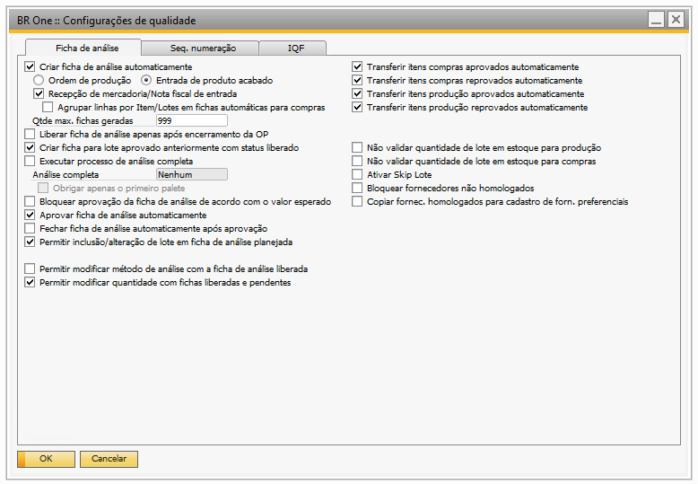Na Aba Ficha de Análise da tela de configurações de qualidade é realizado a configuração para utilização do módulo de qualidade.
Criar ficha de análise automaticamente
Com o parâmetro marcado, o processo de criação de fichas de análise será realizado automaticamente, conforme as configurações definidas na tela de “BR One :: Configurações de qualidade”.
Ordem de Produção:
Com a flag “Ordem de produção” marcada ao efetivar a liberação da OP será gerada uma ficha de analise via DI.
Entrada de Produto acabado:
Com a flag “Entrada de Produto acabado” marcada ao efetivar a Entrada de PA, será gerado via DI uma ficha de analise.
Recepção de mercadoria/Nota fiscal de entrada
A ficha de análise será gerada no momento da adição tanto da Recepção de mercadoria quanto da Nota Fiscal de Entrada, desde que os itens da nota contenham um modelo de análise configurado. No entanto, é importante destacar que, caso uma Nota Fiscal de Entrada tenha como origem uma Recepção de mercadoria anterior (na qual já tenha sido realizada uma ficha de análise automática), não será gerada uma nova ficha de análise. Dessa forma, evitamos duplicidade de informações.
OBS.: Caso o cliente possua o BR One Importação, e ele estiver ativo em conjunto com o BR One Qualidade, ao gerar uma nota fiscal de entrada que seja uma nota fiscal de nacionalização, a ficha de análise não será gerada. Posteriormente, esta ficha de análise será gerada ao realizar o processo de recebimento de mercadorias no módulo de importação, no momento da inserção de uma transferência de estoque.
Agrupar linhas por Item/Lotes em fichas automáticas para compras
Caso esse parâmetro esteja marcado e houver o mesmo item/lote nas linhas da Nota fiscal de Entrada ou Recebimento de Mercadoria, a ficha de análise correspondente será gerada somente uma vez, considerando a quantidade associada ao item ou lote.
Conforme exemplo abaixo:
Consideramos uma Nota Fiscal de Entrada composta por duas linhas que apresentam o mesmo item. A geração da ficha de análise, será produzida apenas uma única ficha, na qual o valor total daquele item/lote presente na nota será agregado de maneira integral.
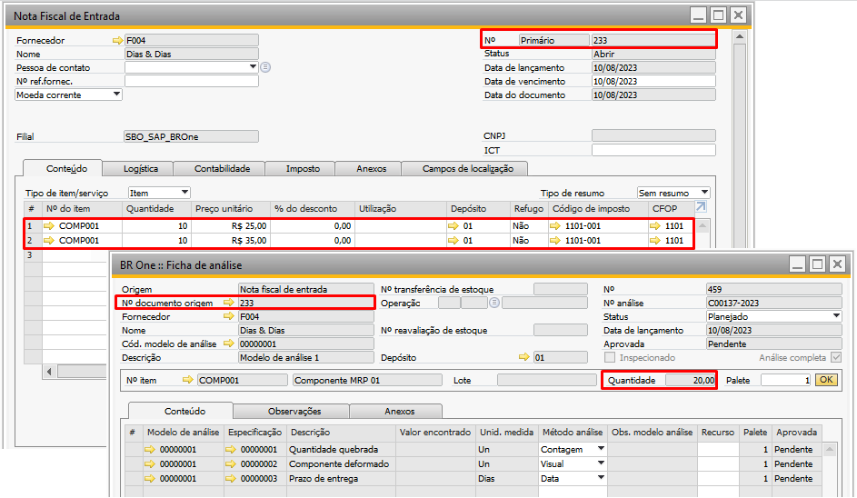E se o parâmetro estiver desmarcado, o processo de criação de ficha de análise automática será para cada item/lote na linha da Nota Fiscal de Entrada/Recebimento de Mercadoria. Isso independente se contém o mesmo item/lote em diferentes linhas da nota.
Qtde max. fichas geradas
O campo “Qtde max. fichas geradas” terá aplicação somente quando o parâmetro “Criar ficha de análise automaticamente” estiver marcado. Nesse campo, o usuário terá a possibilidade de configurar a quantidade máxima de fichas de análise que serão criadas automaticamente ao inserir ou liberar um documento. Caso a quantidade seja maior que esta configuração, não será criada nenhuma ficha de análise automaticamente, e o usuário deverá utilizar o “Assistente de criação de ficha de análise”.
Exemplo:
Se no campo “Qtade max. Fichas geradas” estiver configurado com o valor 2 e ao adicionar uma Nota Fiscal de Entrada ou Recebimento de Mercadoria com mais de 2 itens que possui modelo de análise configurado, a seguinte mensagem de aviso será exibida.
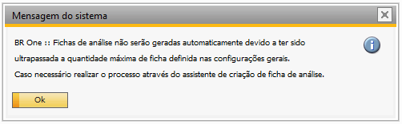BR One :: Fichas de análise não serão geradas automaticamente devido a ter sido ultrapassada a quantidade máxima de ficha definida nas configurações gerais. Caso necessário realizar o processo através do Assistente de criação de ficha de análise.
Caso não seja preenchido o campo ou ele possua um valor igual ou inferior à zero e o parâmetro “Criar ficha de análise automaticamente” esteja marcado, a seguinte mensagem de erro será exibida:
BR One :: O campo ‘Qtde max. fichas geradas’ deve ser maior que zero.
Liberar ficha de análise apenas após encerramento da OP
Este parâmetro tem aplicação exclusiva quando a origem da ficha é uma Ordem de Produção (OP). Quando esse parâmetro estiver marcado, a alteração do status para liberado só é possível se a Ordem de Produção (OP) vinculada estiver com status fechada.
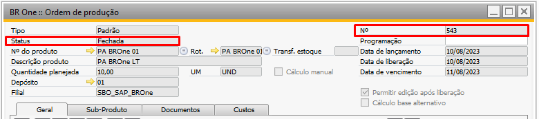 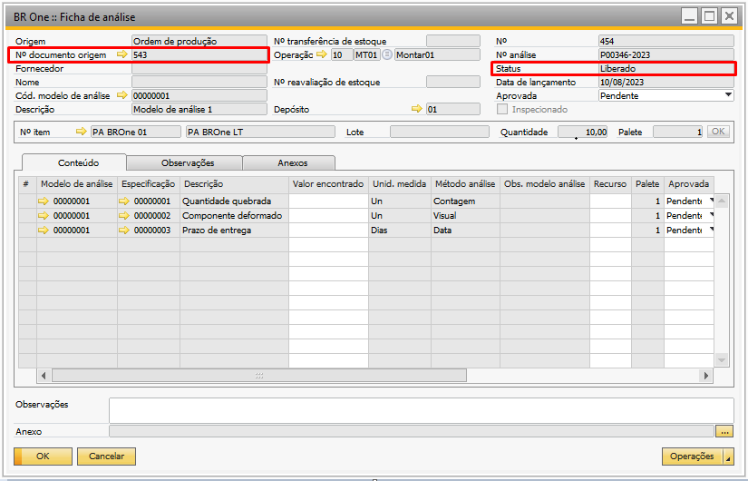Caso a Ordem de produção (OP) não esteja fechada e não tenha entrada de produto acabado e ao tentar liberar a ficha de análise, a seguinte mensagem será exibida:
BR One :: Ordem de produção deve estar fechada e com a quantidade concluída para liberar a ficha de análise
Criar ficha para lote aprovado anteriormente com status liberado
Caso o parâmetro esteja marcado, o add-on irá criar as fichas de análises para os itens de lote, que possuam o número de lote aprovado anteriormente em ficha de análise com status liberado.
Caso parâmetro esteja desmarcado, o add-on não irá criar as fichas de análises para os itens de lote, que possuam o número de lote aprovado anteriormente em ficha análise com status liberado.
Análise completa
{kind=link}
Esse campo irá definir a regra a ser usada para análise completa.
Nenhum
Da mesma forma como se a opção “Executar processo de análise completa” estivesse desativada. Isso permite a realização das análises sem impor a necessidade nem emitir alerta sobre a análise completa.
Alertar
Caso a quantidade da ficha de análise somada à quantidade acumulada seja igual ou maior que a quantidade para análise completa, será exibido um alerta para o usuário.
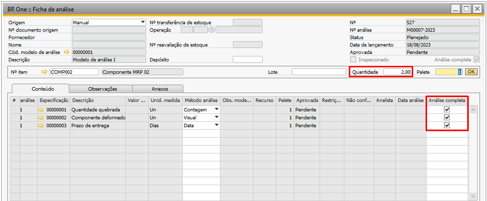Se todas as flags da coluna “Análise completa” estiverem marcada, será exibida a seguinte mensagem:
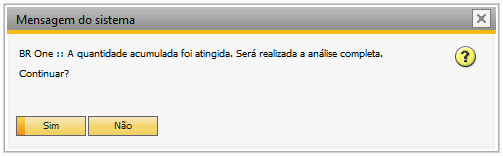BR One :: A quantidade acumulada foi atingida. Será realizada a análise completa. Continuar?
Se existir alguma flag da coluna “Análise completa” desmarcada, será exibida a seguinte mensagem:
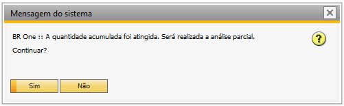BR One :: A quantidade acumulada foi atingida. Será realizada a análise parcial. Continuar?
Caso o usuário informe Sim, a ficha será inserida. Caso contrário, nenhuma ação será executada.
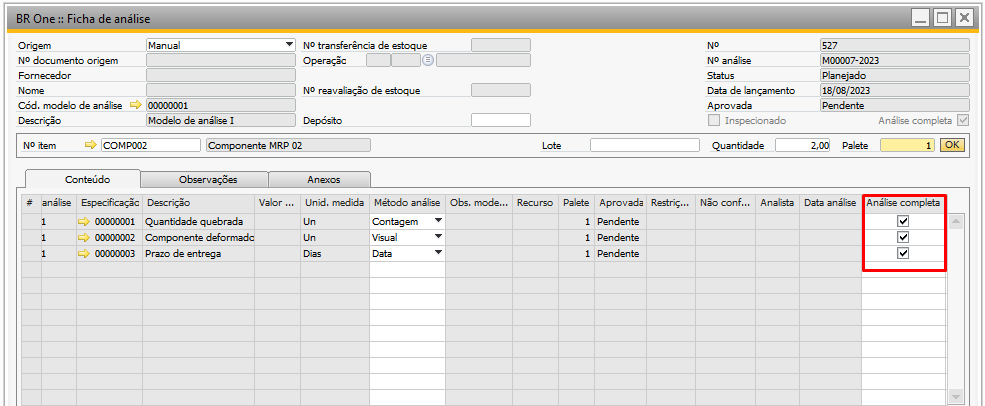
Obrigar
Caso a quantidade da ficha de análise somada à quantidade acumulada, seja igual ou maior que a quantidade para análise completa, não será permitido desativar as flags da coluna “Análise completa”, na tela de Ficha de análise.
Caso tente destivar uma das flags da coluna “Análise completa”, a seguinte mensagem será exibida:
BR One :: Processo de análise completa obrigatório. Impossível desativar.
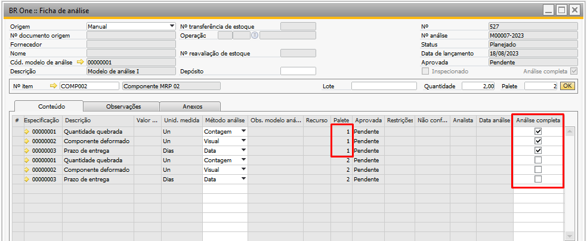
Obrigar apenas o primeiro palete
Este campo somente é liberado quando o campo “Análise completa” estiver definido para Obrigar. Se este campo estiver marcado, não será permitido desativar as flags da coluna “Análise completa” para o primeiro palete apenas. Podendo ser desmarcado para os paletes seguintes.
Bloquear aprovação da ficha de análise de acordo com o valor esperado
Com esse parâmetro marcado, será validado através da Transaction o valor da coluna “Valor encontrado” da ficha de análise. Se o valor presente nesse campo estiver fora do intervalo predefinido no modelo de análise, a alteração da ficha de análise não será permitida.
Exemplo: Para especificação cuja descrição é medida, foi definido um valor de mínimo de 3 e máximo de 7.
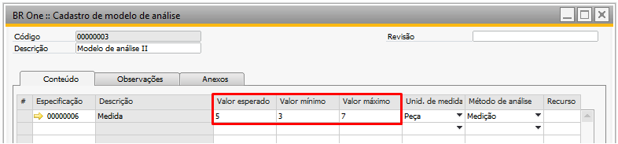Tentativa de aprovar uma linha para esta especificação, com um valor fora do intervalo, neste caso com o valor 10.
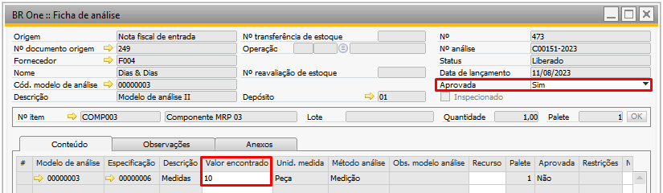Ao tentar atualizar, será exibida a seguinte mensagem:
(-3) BR One :: A linha X só pode ser aprovada se o valor encontrado estiver entre os valores esperados.
Aprovar ficha de análise automaticamente
Com esse parâmetro marcado, ao atualizar uma ficha de análise, caso todas as linhas apresentem o valor da coluna “Aprovada” como Sim, o campo “Aprovada” do cabeçalho será atualizado automaticamente para Sim.
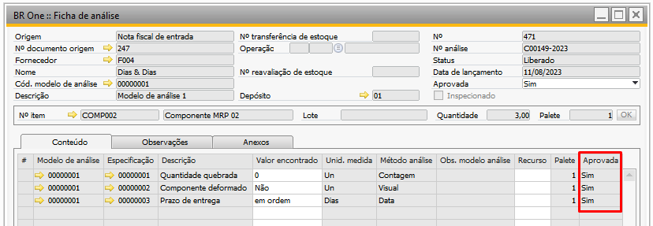Caso a coluna “Aprovada” das linhas estejam todas Sim, antes de alterar o campo “Aprovada” do cabeçalho para Sim e aprovar a ficha, serão realizadas as seguintes validações para que todas as origens (exceto a origem ordem de produção – SAP) estejam com as quantidades corretas.
Sempre quando mencionada a quantidade do documento de origem, caso a origem seja OP do BR One, será considerada a quantidade da soma das entradas de produto acabado vinculadas à OP (desconsiderando as que foram canceladas). Caso contrário, será a própria quantidade do documento de origem nas linhas do documento.
Essa validação poderá ser desconsiderada se o parâmetro “Desconsiderar validação de quantidades de entradas de PA da OP” estiver marcado. Caso a quantidade de origem do documento seja igual à quantidade já liberada e para o documento (em outras fichas com a mesma origem e mesmo documento), a seguinte mensagem de erro será exibida:
BR One :: Já foram liberadas as quantidades necessárias para o nº de documento de origem ‘xxx’. A(s) ficha(s) nº xxx possuem quantidades liberadas.
Caso a quantidade da ficha de análise seja superior à quantidade no documento de origem, a seguinte mensagem de erro será exibida:
BR One :: Quantidade não pode ser superior à quantidade do documento de origem.
Caso a quantidade do documento de origem subtraído a quantidade já liberada para o documento (em outras fichas com a mesma origem e mesmo documento) seja menor que a quantidade da ficha de análise (campo “Quantidade” no cabeçalho), a seguinte mensagem de erro será exibida:
BR One :: A soma das quantidades liberadas é superior à quantidade do documento de origem. Há x item(ns) a mais. A(s) ficha(s) nº xxx, xxx possuem quantidades liberadas.
Fechar ficha de análise automaticamente após aprovação
Com o parâmetro marcado, ao realizar uma atualização em uma ficha de análise e esta for aprovada, a ficha será automaticamente fechada.
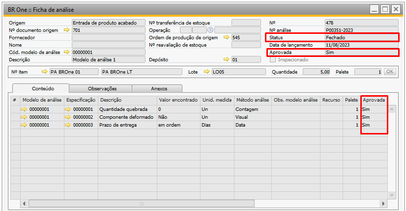Permitir inclusão/alteração de lote em ficha de análise planejada
Com o parâmetro marcado, será possível realizar edições no lote nas fichas de análise que estiverem com status Planejado.
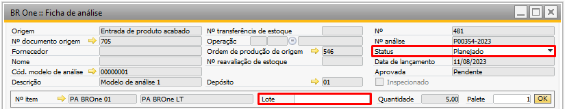Permitir modificar método de análise com a ficha de análise liberada
Com o parâmetro marcado, será possível realizar modificações no campo “Método análise” da aba “Conteúdo” assim que o status na ficha de análise estiver marcado como liberado.
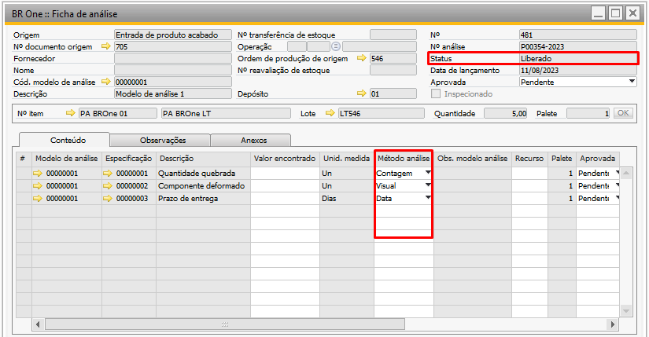Permitir modificar quantidade com fichas liberadas e pendentes
Com o parâmetro marcado, quando a ficha de análise estiver com o Status como Liberado e o campo “Aprovada” como Pendente, será permitido editar o valor da quantidade. No entanto, essa edição estará restrita a um valor menor do que a quantidade do documento de origem.
Transferir itens compras aprovados automaticamente
Com o parâmetro marcado, ao modificar o campo “Aprovada” para Sim ou Com restrições, uma transferência de estoque do item da ficha de análise será executada. Essa transferência utilizará o depósito do cabeçalho da tela “BR One :: Ficha de análise” como depósito de origem e o depósito destino será conforme configurado na tela “BR One :: Destino qualidade”. No caso em que nenhum “Destino qualidade” esteja configurado para o item, ao tentar atualizar a ficha após alterar o campo “Aprovada” para Sim ou Com restrições, uma mensagem será exibida.
BR One :: Depósito de Destino não foi configurado para esse tipo de aprovação.
O depósito aprovado não pode ser o mesmo depósito do documento origem. Se for atribuído o mesmo depósito para os dois campos e o usuário atualizar a ficha para gerar automaticamente a transferência de estoque ou ir manualmente pelo botão, a seguinte mensagem será exibida:
BR One :: O depósito de entrada não pode ser idêntico ao de saída.
Transferir itens compras reprovados automaticamente
Com o parâmetro marcado, ao mudar o campo “Aprovada” para Não, será feita uma Transferência de estoque do item, usando como depósito de origem o depósito do cabeçalho da tela “BR One :: Ficha de análise” e o depósito destino será conforme configurado na tela “BR One :: Destino qualidade”.
Transferir itens produção aprovados automaticamente
Com o parâmetro marcado, ao modificar o campo “Aprovada” para Sim ou Com restrições, uma transferência de estoque do item (PA) da ficha de análise será executada. Essa transferência utilizará o depósito do cabeçalho da tela “BR One :: Ficha de análise” como depósito de origem e o depósito destino será conforme configurado na tela “BR One :: Destino qualidade”.
Para o correto funcionamento do parâmetro é de grande importância que o campo “Destino qualidade” localizado no rodapé na Ordem de produção (OP) esteja preenchido.
O depósito aprovado não pode ser o mesmo que o depósito da OP. Se for atribuído o mesmo depósito para os dois campos, as seguintes mensagens serão exibidas:
{kind=link}
BR One :: O depósito de entrada não pode ser idêntico ao de saída.
Por exemplo: A ordem de produção (OP) nº 96 tem o item PA01 e como depósito o 01, e no destino qualidade Destino 02.
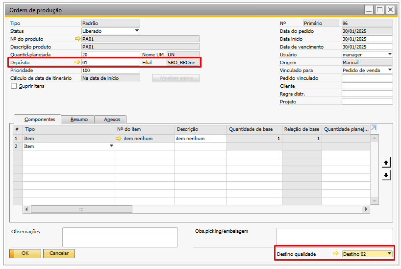{kind=link}
O depósito para aprovados no destino qualidade “Destino 02” está com o depósito 02.
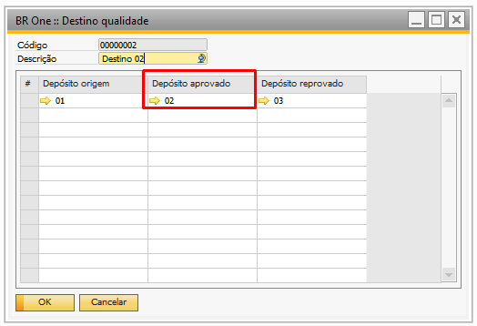{kind=link}
Ao criar a Ficha de Análise para Entrada de Produto Acabado, a transferência de estoque automática será realizada somente quando o parâmetro “Transferir automaticamente itens de produção aprovados” estiver marcado e quando a ficha estiver com o campo “Aprovada” como Sim ou Com restrições.
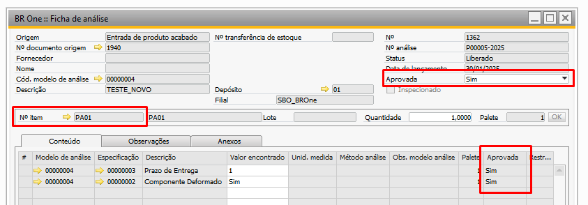{kind=link}
Se a transferência for inserida com sucesso, a seguinte mensagem será exibida:
{kind=link}
BR One :: Transferência nº X inserida com sucesso.
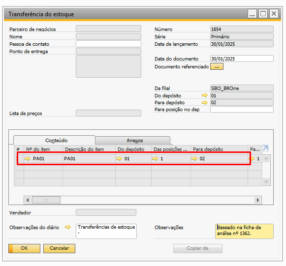{kind=link}
Transferir itens produção reprovados automaticamente
Com o parâmetro marcado, ao modificar o campo “Aprovada” para Não, uma transferência de estoque do item (PA) da ficha de análise será executada. Essa transferência utilizará o depósito do cabeçalho da tela “BR One :: Ficha de análise” como depósito de origem e o depósito destino será conforme configurado na tela “BR One :: Destino qualidade”.
Para o correto funcionamento do parâmetro é de grande importância que o campo “Destino qualidade” localizado no rodapé na Ordem de produção (OP) esteja preenchido.
Por exemplo: Por exemplo: A ordem de produção (OP) nº 96 tem o item PA01 e como depósito o 01, e no destino qualidade Destino 02.
{kind=link}
O depósito para reprovados no destino qualidade “Qualidade 1” está com o depósito 03.
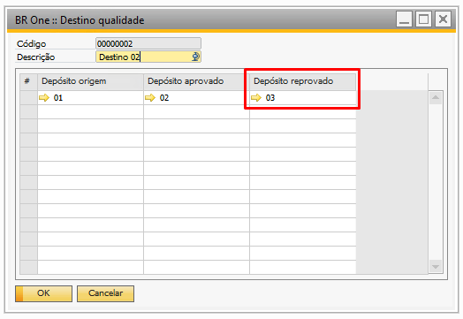{kind=link}
Ao criar a Ficha de Análise para Entrada de Produto Acabado, a transferência de estoque automática será realizada somente quando o parâmetro “Transferir automaticamente itens de produção reprovados” estiver marcado e quando a ficha Não for aprovada.
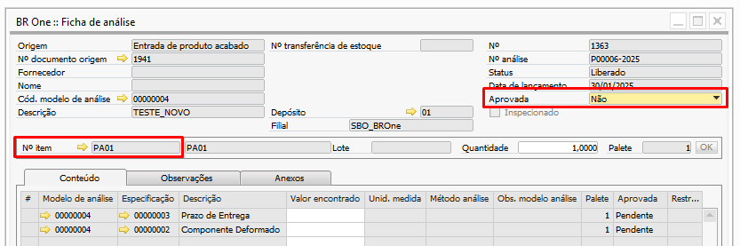{kind=link}
Se a transferência for inserida com sucesso, a seguinte mensagem será exibida:
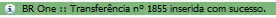{kind=link}
BR One :: Transferência nº X inserida com sucesso.
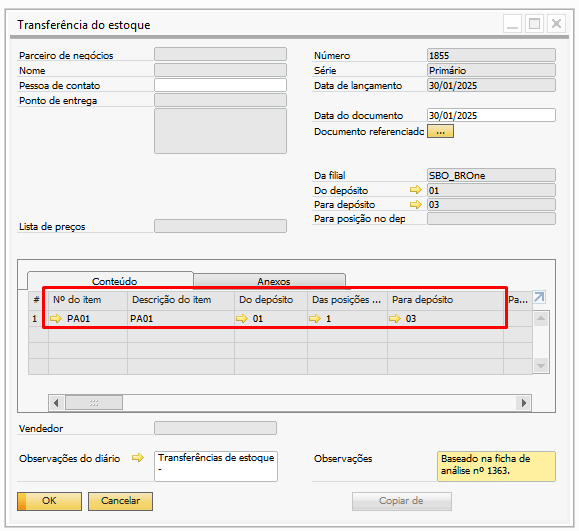{kind=link}
O add-on realiza a validação do destino qualidade, primeiramente na OP e caso a mesma não esteja configurada, é validado a configuração de destino no cadastro do item:
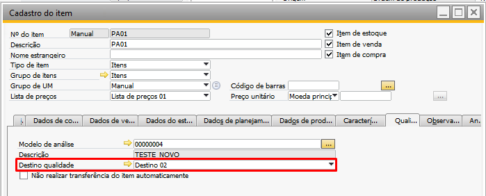{kind=link}
Caso o cadastro do item não possua essa configuração e o usuário tente aprovar a ficha de análise com origem de “Ordem de produção” ou “Entrada de produto acabado”, o add-on irá retornar a seguinte validação:

BR One :: Depósito de destino foi configurado para esse tipo de aprovação.
E também, caso o depósito do cabeçalho da ficha não esteja configurado como “Depósito origem” no “Destino qualidade” da OP, o add-on deve seguinte mensagem de erro:
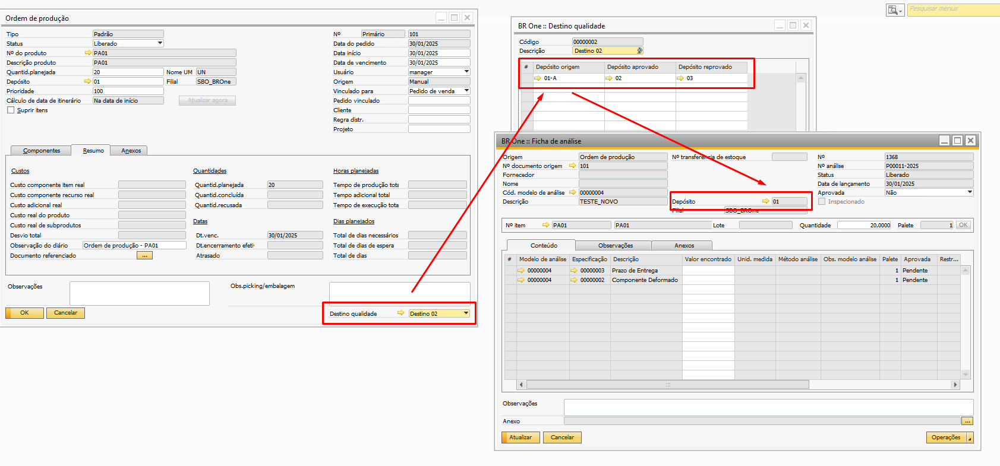{kind=link}
{kind=link}
BR One :: Depósito de destino foi configurado para esse tipo de aprovação.
Não validar quantidade de lote em estoque para produção
Com o parâmetro marcado, a quantidade de itens em lote não será validada, resultando na geração da ficha de análise manual com base na quantidade presente no documento de origem. Por outro lado, ao desativar esse parâmetro, ocorrerá a validação da quantidade de itens no lote.
Por exemplo, considerando um cenário em que existem 10 unidades do item “PA BROne LT” no lote “LT0100” e 5 unidades são consumidas antes da criação manual de uma ficha de análise. Se ao adicionar a ficha de análise com o parâmetro desativado, a seguinte mensagem será exibida:
BR One :: Quantidade superior à quantidade existente no lote selecionado. Quantidade disponível: x
Não validar quantidade de lote em estoque para compras
Com o parâmetro marcado, a quantidade de itens em lote não será validada, resultando na geração da ficha de análise manual com base na quantidade presente no documento de origem. Por outro lado, ao desativar esse parâmetro, ocorrerá a validação da quantidade de itens no lote.
Por exemplo, considerando um cenário em que existem 10 unidades do item “ I007” no lote “LT050” e 5 unidades são consumidas antes da criação manual de uma ficha de análise. Se ao adicionar a ficha de análise com o parâmetro desativado, a seguinte mensagem será exibida:
BR One :: Quantidade superior à quantidade existente no lote selecionado. Quantidade disponível: x
Ativar Skip Lote
Se essa configuração não estiver marcada, o BR One não permite que o usuário acesse as telas Plano de Skip Lote e Planos de Skip Lote - Vínculo de itens comprados, e oculta campos e menus referentes ao processo nas telas Dados do cadastro do item, Cadastro de parceiros de negócios e Ficha de análise. Se a configuração não estiver ativa, também não será realizado o processo de Skip Lote ao adicionar fichas de análise automaticamente, e ao aprovar/reprovar uma ficha de análise.
Essa configuração só pode ser ativada se a configuração “Criar ficha de análise automaticamente” estiver marcada. Se o usuário marcar essa configuração sem a configuração “Criar ficha de análise automaticamente” estar ativa, a seguinte mensagem será exibida:
BR One :: Para marcar a configuração “Ativar Skip Lote”, a configuração “Criar ficha de análise automaticamente” também deve estar marcada.
Bloquear fornecedores não homologados
Se essa configuração estiver marcada, será bloqueada a inserção de um pedido de compra, nota fiscal de entrada ou recebimento de mercadorias caso algum item das linhas do documento não esteja vinculado com o fornecedor, na tela Planos de Skip Lote - Vínculo de itens comprados.
Se a configuração estiver ativa, e em um dos documentos citados acima, existir algum item nas linhas que não possui vínculo com um fornecedor na tela Planos de Skip Lote – Vínculo de itens comprados, a seguinte mensagem será exibida:
(-1) BR One :: Item Nº ‘XXXXX’ não possui vínculo com o fornecedor ‘XXXX’ (Linha X). Vínculo pode ser cadastrado na tela ‘Planos de Skip Lote – Vínculo de itens comprados’
Se ao marcar o parâmetro “Bloquear fornecedores não homologados”, e a parâmetro “Ativar Skip Lote” não estiver marcado, a seguinte mensagem será exibida:
BR One :: Para marcar a configuração ‘Bloquear fornecedores não homologados’, a configuração ‘Ativar Skip Lote’ também deve estar marcada.
Copiar fornec. homologados para cadastro de forn. Preferenciais
Se essa configuração estiver marcada, sempre que for criada uma nova relação 1 para 1 entre item e fornecedor, na tela Planos de Skip Lote – Vínculo de itens comprados, este fornecedor será cadastrado na lista de fornecedores preferenciais do item.
Se o usuário marcar a configuração “Copiar fornec. homologados para cadastro de forn. preferenciais”, e a configuração “Ativar Skip Lote” não estiver ativa, a seguinte mensagem será exibida:
BR One :: Para marcar a configuração “Copiar fornec. homologados para cadastro de forn. preferenciais”, a configuração “Ativar Skip Lote” também deve estar marcada.